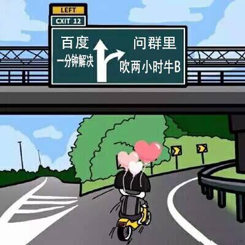
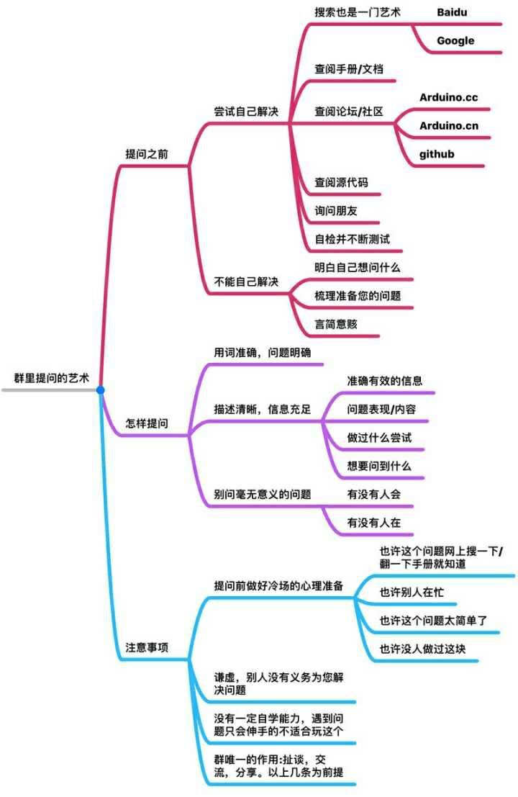

How-To-Ask-Questions
群里提问的艺术
现在互联网发达的时代，大家都会有很多的群，xxx 交流群、xxx 技术交流、xxx开发群、xxx技术学习群等，大家的初心可能都是想交流的，遇到点问题然后就可以在群里问。
然而很多时候你问的问题没人回答；也有时候问了半天还是没找到答案；也有时候当你把问题发出来了，别人正准备回答你的时候，你说知道了；然后刚开始群里很活跃，慢慢的就死了。
其实以上问题，都是大家不想看到的，然而在群里提问是我们加入群的初心，但是很多人做不好，最终导致你的问题无人解答，群慢慢的失去意义。
我将今天的问题分成以下三部分进行介绍：
- 提问之前
- 提问之时，怎么提问注意事项
- 注意事项
提问之前
在群里提问之前首先我们应该做好功课，看自己是否完成以下步骤，否则你的提问将一塌糊涂，大概率得不到想要 的答案。
- 尝试自己解决
- 不能自己解决应该准备的哪些
尝试自己解决
尝试自己解决是非常重要的一步，这也是我们能否经过这个问题能够成长的关键所在。
- 通过搜索引擎搜索： baidu 或者 google(推荐)，搜索结果中前三页如果找不到你想要的信息，就进行下一步吧。对于成熟的开源项目，你遇到的问题，很可能别人也遇到过。这时通过 Google、StackOverflow 等网站的搜索服务，可以帮你快速定位并解决问题。永远记住，地球上的你并不孤单，包括你遇到的问题。
- 查阅手册/文档： 确保自己阅读过至少一次官方文档。这样在遇到问题时，如果能回忆起只言片语，就可以再去读一遍相关文档，问题往往也就解决了。
- 查阅社区/论坛： 阅读常见问题文件（FAQ）或者开源项目的 issue，或者论坛(类似 react china)
- 询问朋友： 如果你使用的开源软件，在朋友圈或同事圈里也有人使用，那么抬起你的脚、或拿起你的电话，真挚诚恳的探讨不会遭遇拒绝，而会增进友谊。不要犹豫，你的内心渴望面对面交流，你的朋友也是。
- 自检并不断测试： 试自己检查或试验以找到答案。
- 阅读源码(这步非必须)： 如果你是程序开发者，尽量尝试阅读源码以找到答案。
经过以上 6 步或者 5 步你都无法解决遇到的问题，那么你确实针对这个问题能力有限，准备去群里请教了，那么在尝试自己解决之后无果，应该做哪些准备呢？
不能自己解决应该准备的哪些
- 一定要明白自己想要问什么问题：不能自己都说不清自己想要问什么问题，那么群里提问你也问不出什么来。
- 梳理准备您的问题：要说明之前你都干了些什么。
- 要用言简意赅的语言：这个是我们作为职场一个必备的技能，说重点，言简意赅。
怎么提问
抱着平和对等的心态，找到合适的途径后，就得静下心来将遇到的问题写成文字。书写文字不是一件简单的事情，我们可以从遵循一些简单的规则开始。
用词准确，问题明确
标题要简洁清晰，要言之有物。
Bad：救命呀/急/跪求，遇到了一个 react 问题，xxx 组件渲染不出来
Good：在使用 xxx 版本的 react ，我操作了 xxx，也写了 xxx，但是 xxx 组件渲染不出来
一个好标题范例是 目标 —— 差异式的描述，许多技术支持组织就是这样做的。在目标部分指出是哪一个或哪一组东西有问题，在差异部分则描述与期望的行为不一致的地方。
描述清晰，信息充足
- 准确有效的信息： 描述事实，而不是猜测，如果你想给出你的猜测，一定要先描述事实，给你的猜测一些证据，不然就不要猜测。
- 问题表现/内容： 按照时间顺序列出问题症状。问题发生前的一系列操作，往往就是对找出问题最有帮助的线索。因此，你的说明里应该包含你的操作步骤，以及机器和软件的反应，直到问题发生。在命令行处理的情况下，提供一段操作记录（例如运行脚本工具所生成的），并引用相关的若干行（如 20 行）记录会非常有帮助。
- 简单的做过什么尝试： 在描述你做过什么尝试的时候，简单的你描述你做了哪些尝试就行，为什么要这么做其实不是那么重要。
如果你想弄清楚如何做某事（而不是报告一个 Bug），在开头就描述你的目标，然后才陈述重现你所卡住的特定步骤。
经常寻求技术帮助的人在心中有个更高层次的目标，而他们在自以为能达到目标的特定道路上被卡住了，然后跑来问该怎么走，但没有意识到这条路本身就有问题。结果要费很大的劲才能搞定。
玉伯有句话是这么说的：
提问者选择的路本身就是一条崎岖之路，对于要解决的问题，实际上有更好的方式。这种情况下，描述清楚目标，讲清楚要干什么非常重要。
- 想要问到什么：提供建议？发送一段代码？检查你的补丁或者别的？在群里经常会出现这种情况，当某个人发了一段文字，另外的人说：你想问什么？
所以我们在问问题的时候一定要把你想要问到什么，这个目标想清楚。
- 提供尽量多的信息：尽量提供可重现的例子，你可以在 jsbin)、runjs、jsfiddle)、codepen 等这些地方提供一个可重现的例子。即使你是一个很大的项目，想办法把你需要验证的点提取出来，如果确实无法提取，就贴一些代码，出现问题那行代码周围的代码(周围的相关代码都要，因为你可能觉得不是他们的问题，但也许就是，不然你觉得的都是对的，你就不会不知道怎么解决了)。
避免一些毫无意义的问题
经常会有人问一些毫无意义的问题，比如这样的：
Bad：有没有人会xxx？
Bad：有没有人在？
Bad：谁能帮我解决一个问题？
面对这种问题，别人就很难预估你这个问题需要解决多久，也很难判断自己是否能解决这个问题，如果他回答了你，意味着你就是有空而且很在行，所以他还是选择不出声。这个就跟微信私聊的时候说：”在吗？“ 这种一个意思。
Bad: 什么是 JavaScript？
这种问题也是，很明显通过搜索引擎就能搞定的，要是下次还有这种问题，你就把这个图发给它。

建议的问法：
- 有问题直接问。比如：ES6什么时候雄霸天下，前端什么时候一统江湖？
- 直接说场景：我在做xx端东西的时候，在 window 7 平台的 IE7 版本下遇到了左右不对齐问题，具体如图所示img，代码地址：xxx 在百度中找到的答案，试了之后还是有同样的问题。请有空的同学帮我看看是什么问题？
注意事项
提前做好冷场的准备：也许别人在忙，也许这个问题太简单了，也许没人做过这块，如果冷场了，没人回答，赶紧换下一个群。
谦虚，别人没有义务帮你解决问题，往往大牛的时间比你少，比你珍贵。
没有一定的自学能力，问到问题就伸手的不适合玩这个。
群唯一的作用就是：扯淡、交流、分享，以上几条为前提。
如果觉得问题记不住，收藏一下这个图吧：

最后
其实对于问问题，我们换位思考一下就更好了，这其实也是人际交往的方式，站在看你提问题的角度，想想当别人提问题的时候，你想让他问什么，你才愿意去回答。
当然除了在群里提问，在社区里提问，论坛里提问都有一定的规范，后面再慢慢补充吧。